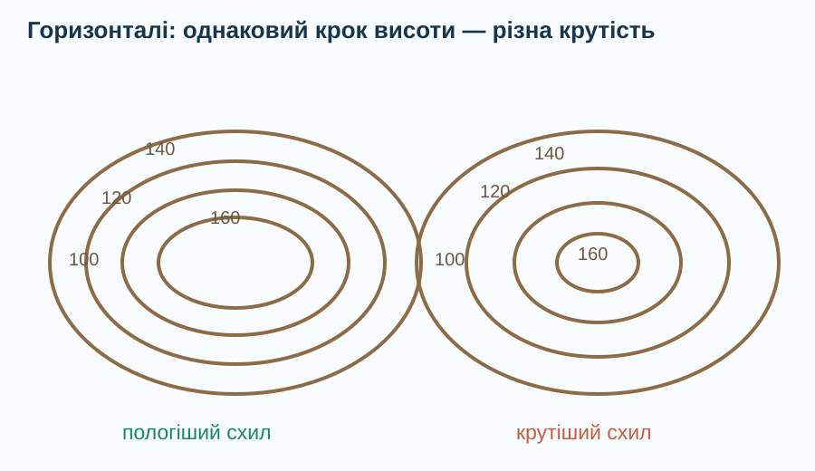
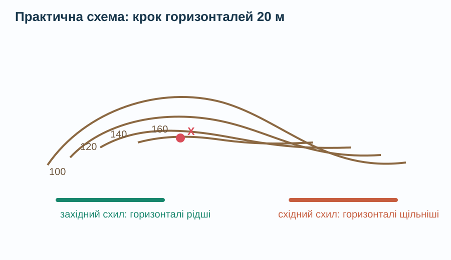

Абсолютна висота
Висота точки над середнім рівнем моря.
Як перетворити об’ємний рельєф на плоску карту — і не втратити висоту? Спочатку читаємо докази, потім формулюємо правила.

Визначити висоту точок, відновити форму схилу за горизонталями та довести, де рельєф крутіший.
Оберіть правильне пояснення для точки A = 214 м.
Абсолютну висоту відлічують від прийнятого нульового рівня — середнього рівня моря.
Порівняйте супутникове/рельєфне зображення з топографічним способом подання висоти.


Точка A має абсолютну висоту 360 м, точка B — 145 м. Яка відносна висота A щодо B?
Відносна висота = більша абсолютна висота − менша абсолютна висота.
Крок горизонталей на схемі — 20 м. Визначте висоту точки X і крутіший схил.

Фізична карта показує висоту й глибину кольорами, але колір читають лише разом із легендою.
Під час перегляду знайдіть два правила: як горизонталі показують висоту і як — крутість.
Узагальнюємо після роботи з моделями.
Висота точки над середнім рівнем моря.
Перевищення однієї точки над іншою; різниця їх абсолютних висот.
Лінія на карті або плані, що з’єднує точки з однаковою абсолютною висотою.
Чим менша відстань між сусідніми горизонталями, тим крутіший схил.
Учень каже: «Точка P лежить на горизонталі 300 м, а Q — на 260 м, тому P на 40 м вище Q. А схил біля P точно крутіший, бо P вище».
Питання: як за топографічною картою довести, що один схил крутіший за інший?
§19. Знайдіть на фізичній карті одну низовину, одну височину й одну гірську територію. Для кожної запишіть діапазон висот за легендою. Додатково: поясніть, чому за фізичною картою не завжди можна точно визначити крутість схилу.
Спочатку введіть дані учня.